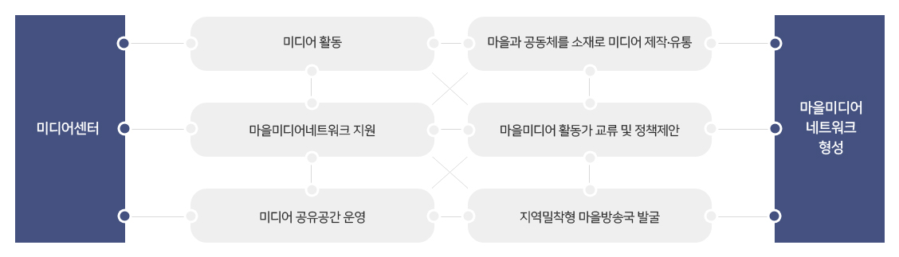
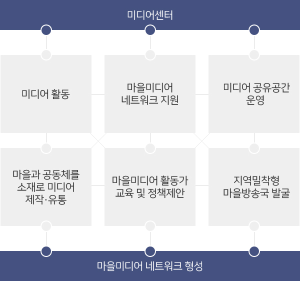
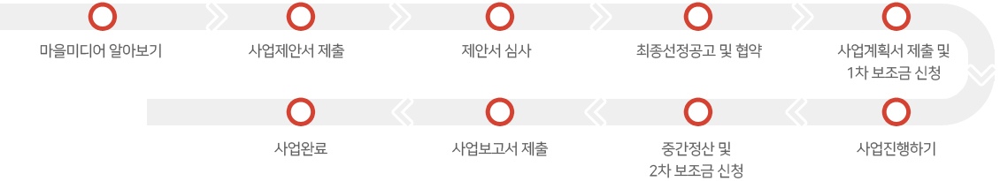
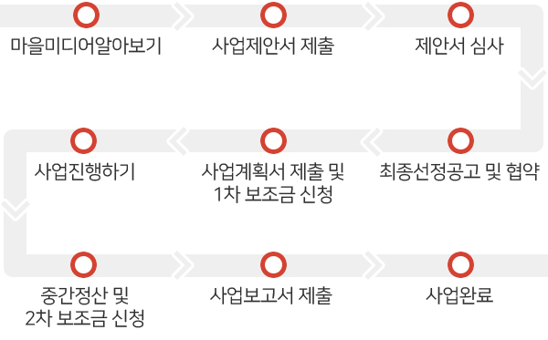

마을미디어는 마을 주민들이 함께 만들고 직접 운영하는 미디어로 라디오, 영상, 신문 등 다양한 미디어를 매개로 이웃들이 만나고 이야기 나누는 소통 공동체입니다.
사업목표
- 수원미디어센터 마을미디어 활성화 사업은 2019년부터 보조금 지원방식으로 공모사업을 정비하여 마을미디어 활동을 위한 예산 및 지역 인프라를 구축하여 자생력과 전문성을 확보할 수 있도록 지원합니다.
- 시민들 스스로가 직접 미디어를 제작 및 유통하는 활동을 통해 자신을 표현하고 지역의 이슈를 공유함으로써 소통의 관계성을 중심으로 공동체 형성 및 확장을 지원합니다.
지원유형
| 구분 | 마을미디어 활동 | 마을미디어 공유공간 운영 |
|---|---|---|
| 지원대상 | 마을미디어 활동 6개월 이상 주민모임(3인 이상) | 마을미디어 활동 2년 이상 및 공간 확보(예정)주민모임(3인 이상) |
| 지원목적 | 주민 누구나 마을과 공동체를 소재로 미디어를제작·유통할 수 있도록 지원 | 거점공간 프로그램 및 운영체제 지원을 통한지역밀착형 마을미디어 환경 조성 |
| 지원내용 | 콘텐츠 제작 활동을 위한 장비·시설, 인건비,운영비 등 지원 | 시설공사비, 임차비, 인건비, 공간운영비 등 지원 |
지원규모
2019 마을미디어 공모사업 추진 현황
| 구분 | 활동단체 | 매체 | 지원금액 |
|---|---|---|---|
| 미디어 활동 | 12단체 | 라디오 : 7단체 / 영상 : 3단체 / 신문 : 2단체 | 50,000천원 |
| 지원대상 | 2단체 | 라디오 : 1단체 복합(라디오/영상/신문) : 1단체 |
25,000천원 |
2019년 지역별 마을미디어지원 현황
| 구분 | 권선구 | 영통구 | 장안구 | 팔달구 | 총합 |
|---|---|---|---|---|---|
| 미디어 활동 | 5 | 3 | 2 | 2 | 12 |
| 미디어 공유공간 운영 | - | 2 | - | - | 2 |
사업기간
- 2019년 3월 ~ 10월
사업추진체계


사업추진절차


문의처
- 수원미디어센터 공동체미디어팀 (031-280-6348)